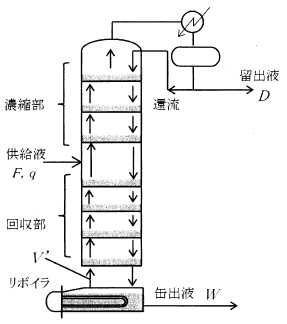

平成30年度 問30 有機化学及び燃料
蒸留塔の供給液流量F、その気液比q ((1-q)：蒸気、q：液)、留出液流量D、缶出液流量W、還流比Rとする。濃縮部、回収部の気液流量は変化しないものとして、リボイラで発生する蒸気量V’は次のうち、最も適切なものはどれか。

①
R＋(F/q)－W
②
R＋qF＋W
③
R＋(F/q)＋W
④
RD＋qF－W
⑤
RD＋(1-q)F＋W
正答
④ RD＋qF－W
還流量をLとすると、還流比R＝L/DであることからL＝RDです。
供給液量Fの気液比がq ((1-q)：蒸気、q：液)であることから、供給後の塔下部へはqFの液が流れ、塔上部へは(1-q)Fの蒸気が流れます。
蒸留塔全体の物質収支を求めると、F＝D＋Wとなります。リボイラ部分の物質収支を求めると、V’＋W＝RD＋qFとなります。
よってV’＝RD＋qF－Wです。